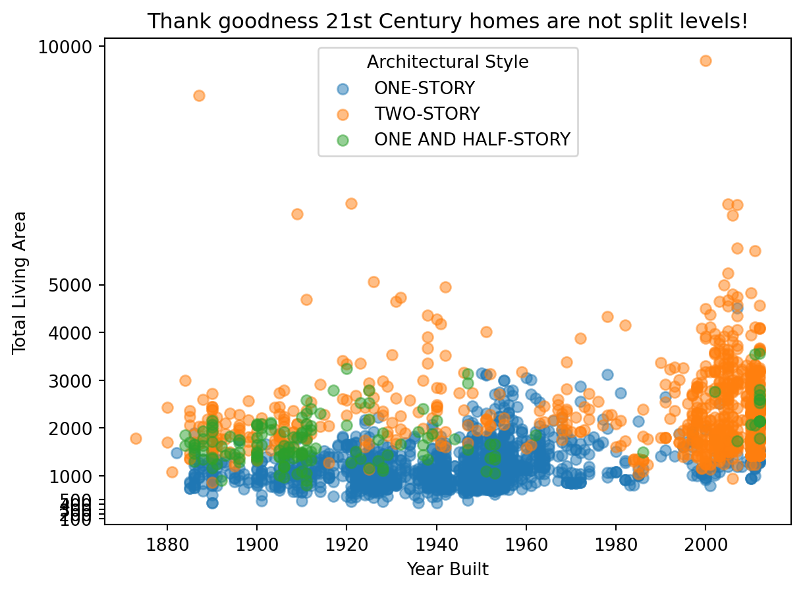
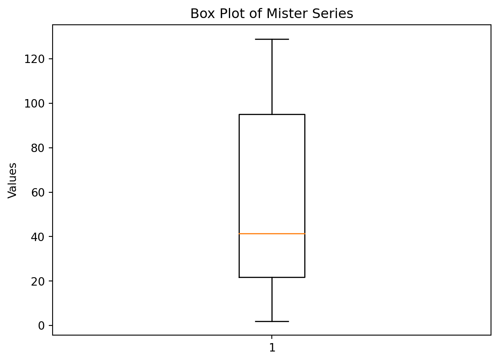

import pandas as pd
import altair as alt
import numpy as np
import matplotlib.pyplot as plt
from sklearn.model_selection import train_test_split
from sklearn import tree
from sklearn.ensemble import GradientBoostingClassifier
from sklearn import metricsCSE 250 Coding Challenge
Jared Linares
Challenge Summary
After completing the challenge, describe how you think you did.
Challenge 1
Split Entry houses are a failed building experiment in the United States. Use the data from our Denver homes project, as shown below, to recreate the following graphic. ##### Answer
Include the image, answer, or table here
Code
url = 'https://github.com/byuidatascience/data4dwellings/raw/master/data-raw/dwellings_denver/dwellings_denver.csv'
dat_home = pd.read_csv(url).sample(n=4500, random_state=15)
dat_home.head()| parcel | nbhd | abstrprd | livearea | finbsmnt | basement | yrbuilt | condition | quality | totunits | ... | numbaths | arcstyle | sprice | deduct | netprice | tasp | smonth | syear | qualified | status | |
|---|---|---|---|---|---|---|---|---|---|---|---|---|---|---|---|---|---|---|---|---|---|
| 1466 | 00195-11-021-000 | 1 | 1112 | 921 | 460 | 921 | 1983 | AVG | C | 1 | ... | 2 | ONE-STORY | 72800 | 0 | 72800 | 72800 | 12 | 2011 | U | I |
| 5114 | 01334-30-013-000 | 124 | 1112 | 955 | 0 | 0 | 1949 | Good | C | 1 | ... | 2 | ONE-STORY | 131500 | 0 | 131500 | 131500 | 12 | 2011 | Q | I |
| 244 | 00141-59-014-000 | 5 | 1112 | 1420 | 0 | 0 | 2012 | AVG | C | 1 | ... | 3 | TWO-STORY | 17113000 | 0 | 17113000 | 17113000 | 12 | 2010 | U | V |
| 3954 | 01301-26-011-000 | 105 | 1112 | 1336 | 0 | 0 | 1953 | Good | C | 1 | ... | 2 | ONE AND HALF-STORY | 189000 | 4000 | 185000 | 190472 | 10 | 2011 | Q | I |
| 16098 | 05243-02-016-000 | 530 | 1112 | 896 | 796 | 896 | 1938 | AVG | C | 1 | ... | 2 | ONE-STORY | 310000 | 5000 | 305000 | 305000 | 7 | 2011 | Q | I |
5 rows × 26 columns
arcstyle_colors = {style: color for style, color in zip(dat_home['arcstyle'].unique(), plt.cm.tab10.colors)}
rannge = [100,200,300,400,500,1000,2000,3000,4000,5000,10000]
keys = ['ONE-STORY','TWO-STORY','ONE AND HALF-STORY']
for style, color in arcstyle_colors.items():
if style in keys:
plt.scatter(dat_home[dat_home['arcstyle'] == style]['yrbuilt'],
dat_home[dat_home['arcstyle'] == style]['livearea'],
c=color,
alpha=0.5,
label=style)
plt.yticks(rannge)
plt.title('Thank goodness 21st Century homes are not split levels!')
plt.xlabel('Year Built')
plt.ylabel('Total Living Area')
plt.legend(title='Architectural Style', loc='best')
plt.show()*c* argument looks like a single numeric RGB or RGBA sequence, which should be avoided as value-mapping will have precedence in case its length matches with *x* & *y*. Please use the *color* keyword-argument or provide a 2D array with a single row if you intend to specify the same RGB or RGBA value for all points.*c* argument looks like a single numeric RGB or RGBA sequence, which should be avoided as value-mapping will have precedence in case its length matches with *x* & *y*. Please use the *color* keyword-argument or provide a 2D array with a single row if you intend to specify the same RGB or RGBA value for all points.*c* argument looks like a single numeric RGB or RGBA sequence, which should be avoided as value-mapping will have precedence in case its length matches with *x* & *y*. Please use the *color* keyword-argument or provide a 2D array with a single row if you intend to specify the same RGB or RGBA value for all points.
Challenge 2
mister = pd.Series(["lost", 15, 22, 45, 31, "lost", 85, 38, 129, 80, 21, 2])
for i in range(len(mister)):
if mister[i] == "lost":
mister[i] = 125
plt.boxplot(mister)
plt.title('Box Plot of Mister Series')
plt.ylabel('Values')
plt.show()
Challenge 3
mister = pd.Series(["lost", 15, 22, 45, 31, "lost", 85, 38, 129, 80, 21, 2])
for i in range(len(mister)):
if mister[i] == "lost":
mister[i] = 125
print(round(mister.mean(), 2))59.83Challenge 4
url = 'https://github.com/byuidatascience/data4python4ds/raw/master/data-raw/table1/table1.json'
# Read JSON data from the URL
df = pd.read_json(url)
df
# filter data to keep only cases column and 1999/2000 years
df = df[df['year'].isin([1999, 2000])]
df = df[['country', 'year', 'cases']]
df = df.pivot(index='country', columns='year', values='cases')
df.head(6)| year | 1999 | 2000 |
|---|---|---|
| country | ||
| Afghanistan | 745 | 2666 |
| Brazil | 37737 | 80488 |
| China | 212258 | 213766 |